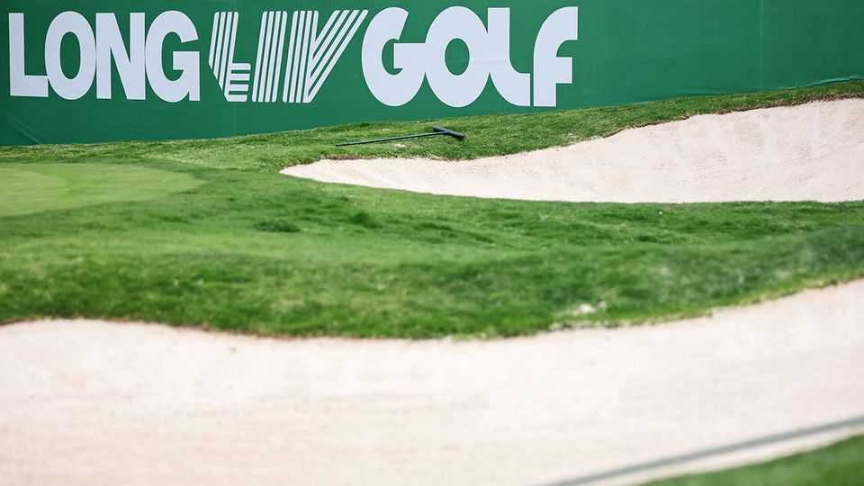

LIV Golf’s failure shows how not to invest in sport
It takes more than huge amounts of money to disrupt a game

Sep 3rd 2026
PUTTING ASIDE the exorbitant salaries, the silliness of the “Golf but louder” slogan and the din of pop music on the fairway, there was always something a bit plucky about LIV Golf. Saudi Arabia, a country that looks like a bunker but has no golfing tradition, was attempting to disrupt one of the world’s most snooty sports. Predictably, its attempt ended in failure. Last month the Public Investment Fund (PIF), Saudi Arabia’s $900bn sovereign-wealth fund, pulled the financial plug. In the coming days LIV Golf is expected to file for bankruptcy.
It is not just golf, though. The PIF has led a wave of investment by the kingdom over the past five years in football, tennis, boxing, martial arts and motor racing, plus e-sports (as video-game tournaments are known). Its ambition was impressive. Many accused Muhammad bin Salman, the Saudi crown prince, of “sportswashing” his country’s thuggish reputation by pouring petrodollars into athletes’ pockets. They missed the point, at least partly. The PIF hoped to use the thrill of sport to make young Saudis more active, as well as hosting marquee events to attract tourists and diversify its oil-soaked economy.
Now, however, physical sports are in the relegation zone. The PIF’s recently published strategy for 2026-30 mentions the word “sports” only seven times in 50-odd pages—on six occasions prefixed by “e-”. At a time when private-equity firms and other investors are pouring so much money into sporting franchises that some perceive a bubble, what can be learned from the Saudis’ retreat?
The first lesson is the importance of fans. It is one thing to have a near-bottomless bank account. It is another to buy your way into supporters’ hearts. The PIF blew $5bn on LIV Golf hoping to create a rival to America’s PGA Tour, using lavish prize money, faster games and more razzmatazz to attract younger fans. But though it signed some star players, LIV turned off golf’s well-heeled supporters, who like the PGA’s genteel traditions and prestige. With too few fans, it could not generate the broadcast income to be sustainable.
Fans can also be powerful foes. FIFA, football’s global governing body, recently scrapped an attempt to raise $4.2bn by selling off chunks of the beautiful game, including the World Cup. That prompted a backlash among national federations, which feared, among other things, football supporters’ wrath.
Therein lies the second lesson. In sport, creative destruction is hard. As with many enterprises that have been around for generations, it is tempting to think that sports are ripe for disruption. Besides the PIF, others have sought to shake up established leagues by launching snazzy alternatives, only to fail. Grand Slam Track, an alternative to the Diamond League in athletics, was started by Michael Johnson, an American sprinter. It filed for bankruptcy in December less than a year after its first fixture. Only a few upstarts prosper, such as Ultimate Fighting Championship, an American mixed-martial-arts organisation that has taken cage fighting to a new level. It created a new market rather than trying to muscle into already popular terrain.
The third lesson is time—or timing. Building a winning sports franchise can take generations. More than 50 years have passed since Pelé, a great Brazilian footballer, first played for the New York Cosmos. Only now is American soccer coming into its own (and Pelé’s Cosmos have long been defunct). The quickest way to make a buck today may be to buy a well-known franchise and sell it shortly afterwards. That is what Mark Walter, a financier, did with the Los Angeles Lakers, selling the basketball team last month to two fellow billionaires for $12.5bn, $2.5bn more than he had paid for it a year earlier. But in a frothy market, flipping is a risky strategy.
If all else fails, think ahead. Saudi Arabia has a mixed record investing in sports that have been around for centuries. But in the past five years it has taken a more methodical approach to the emerging field of e-sports, including leading a $55bn buy-out of Electronic Arts, a gaming powerhouse, which was completed last month. Watching gaming tournaments may not get young Saudis off the couch—but they love it. As an investment, it is less quixotic than LIV Golf. ■